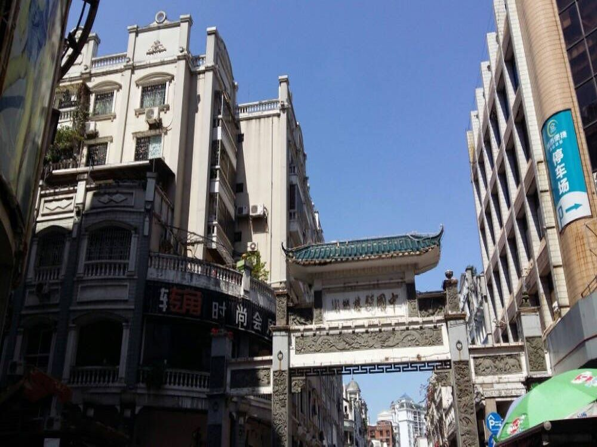

舞狮表演
梧州文促会要不忘初心、牢记使命，提高政治站位，
注重自身建设，做好文化各方面工作。要确定工作目标，保持先进性、团结性，提高凝聚力、促进力、
公信力和影响力，不断提升文促会的实力。要突出本土特色，不断打造文化品牌，为繁荣和弘扬中华文化而努力，
让梧州的文化百花园绽放出更加绚丽多彩的花朵，结出更加丰硕的果实。
让文促会成为梧州良好社会风气的践行者、引领者，在建好广西“东大门”的伟大实践中有担当、有作为、有贡献。
各级党委、政府要重视支持文促会的工作，关心文促会的发展，努力帮助解决文促会工作中的实际问题，
为文促会开展工作创造更好的环境、提供更好的条件。要大力弘扬“海纳百川、力争上游”新时代梧州精神，
认认真真、踏踏实实、精益求精干事创业，用奋斗书写梧州历史文化发展的新荣光。
藤县狮队属南派舞狮，其表演形式主要是采青和高桩表演。
表演者通常是二人合舞一个狮子，借助道具的设计展现出山、岭、岩、溪、涧、索、桥、水等大自然景物，
通过在桩阵上跳跃腾飞等各种高难、惊险动作，表露狮子的喜、怒、醉、乐、醒、动、静、惊、疑、猛等神态，
反映了狮子历尽千辛万苦，克服重重困难、勇敢向前的精神，最终获得丰硕成果（采青），
从而把舞狮艺术推向拟人化的励志教育，将杂技、武术、技巧、舞蹈等技术融于狮艺之中，把狮子的各种神态、
形态表现得淋漓尽致、出神入化，给观众以力与美的艺术享受。
龙母文化
梧州龙母庙位于市城北桂江东岸，桂林路北端，始建于北宋初年，明万历、清康熙、雍正年间曾重修， 是一座广西少有保存至今的，具有宋代建筑风格的文物古迹，有很高的历史、旅游价值。
龙母文化，是西江文化的内核，是中华龙文化的源头之一，其流传之广、 影响之大并不亚于海神妈祖。经过千百年来的历史文化淀积而形成的龙母文化所孕育和产生的强大文化力， 已经转化为社会生产力，正是龙母文化的熏陶和潜移默化的影响， 西江流域一代又一代的劳动者继承和发扬龙母自强不息、厚德载物的民族精神，用智慧和勤劳， 创造了西江流域的社会财富，推动了西江流域的社会进步和经济发展。梧州的龙母文化源远流长， 深深植根于民间，在桂东南、粤港澳以至东南亚还有众多的现代崇拜者，是梧州地方文化的瑰宝。
骑楼文化
骑楼是我国南方和东南亚一带特有的近代建筑，至今梧州已拥有骑楼建筑560幢，
骑楼街道总长7公里，其规模之大，数量之多，实为国内罕见，被人们誉为“中国骑楼博物馆”。
这些历史悠久又富有岭南文化特色的骑楼，成群成片，保存完好，是梧州极其宝贵的历史文化旅游资源。
|  |
梧州的骑楼建筑主要是前铺后宅，下铺上宅、住商合一。楼下是人行交通通道， 骑楼建筑柱廊外侧是车辆交通通道。 一般采用钢筋混凝土结构，柱间距一般为3米到5米左右。顶饰、阳台、柱头等形式各异，或庄重大方、 或精巧别致，或典雅高贵。 浮雕、罗马柱、园拱形窗，融合了中国传统风格和欧洲古典建筑风格。
在这里，体现水都风韵的清水墙，西式风格的铁栏观景阳台， 西化痕迹较浓的罗马柱、圆拱形窗， 梧州特有的水门和拴船铁环等建筑构件被突出表现于立面之中。